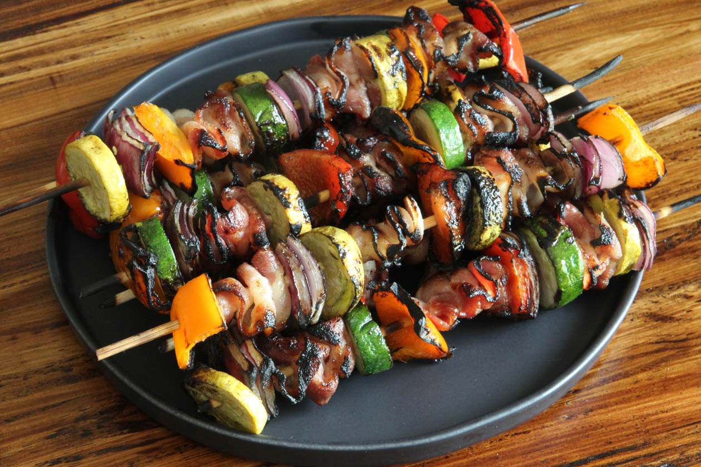
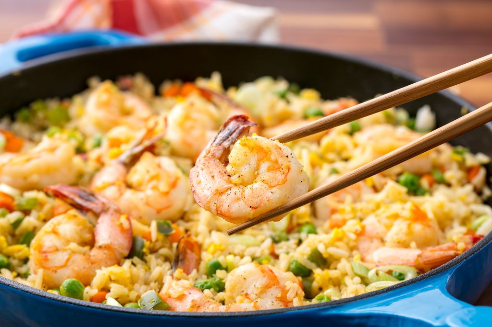
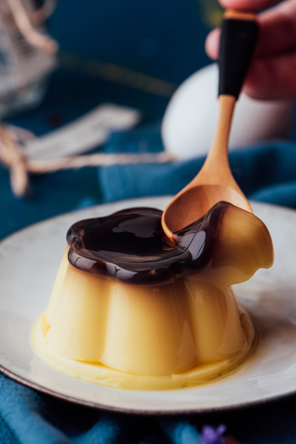
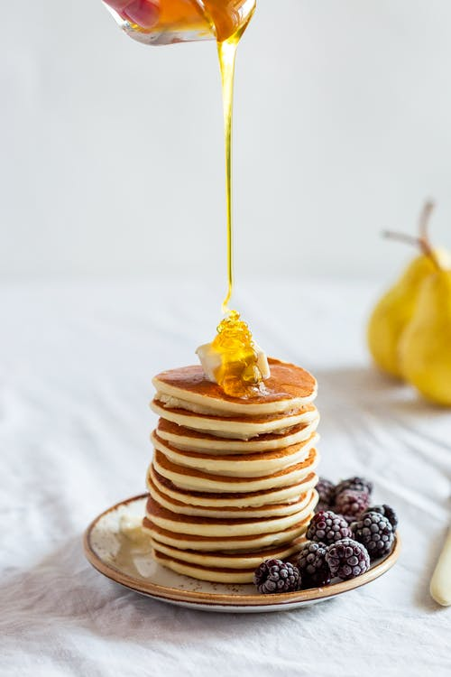
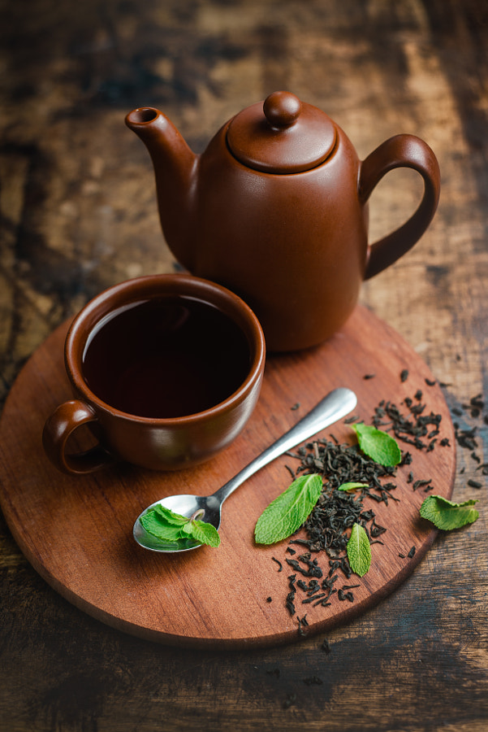
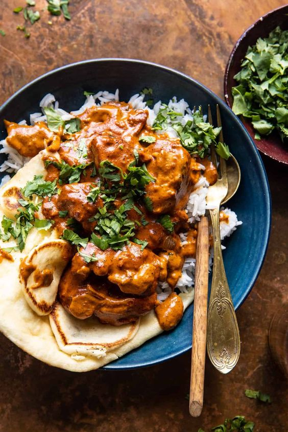

A Dosa is a thin pancake, originating from South India, made from a fermented batter
consisting of lentils and rice

Kebabs are various cooked meat dishes with their origins in Middle Eastern cuisine.

Pasta is a staple food of Italian cuisine.Pasta is a food made from starch and water

Shrimp and prawn are types of seafood that are consumed worldwide.shrimp is high in
protein but low in food energy.

Pudding is a type of food that can be either a dessert or a savory (salty or spicy) dish that is part of the main meal. Dessert puddings are rich, fairly homogeneous starch- or dairy-based desserts

A pancake is a breakfast dish, a flat cake that's made by pouring batter into a hot pan and frying it on both sides. Many people like to eat their pancakes with a drizzle of maple syrup.

Tea is an aromatic beverage prepared by pouring hotwater over fresh leaves of Camellia sinensis.An evergreen shrub native to China and East Asia.

Butter chicken originated from Northern India in 1948. Created by Kundan Lal Gujral, you may notice that Butter Chicken (known as murgh makhani — chicken with butter) is similar to British tikka masala.